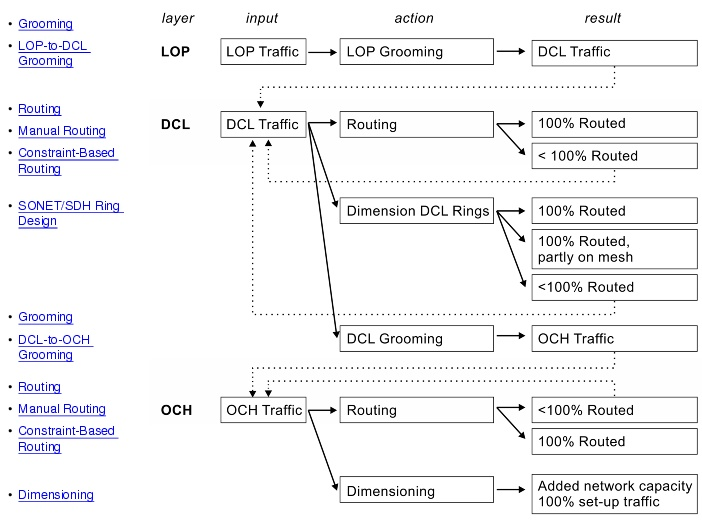

Overview > Designing Your Network > Setting Up Traffic
Setting Up Traffic
This section describes the different design operations that can be used to set up traffic, as illustrated in Figure 1-1. For references to additional information, see References: Design Operations.
Figure 1-1 Setting Up Traffic: Logical Workflow

Dimensioning
In most cases, you will want to dimension your network—that is, to equip it with enough capacity to handle a specific level of traffic. Dimensioning can be done for different recovery strategies. The aim is to route all traffic at minimal cost. Dimensioning can consider multiple WDM line system types or SONET/SDH trunk bit rates and deploy the cost-optimal type on each link. In transparent network mode, dimensioning also adds regeneration equipment in the nodes when required to overcome transmission limitations.
In general, SP Guru Transport Planner does "upgrade" dimensioning: it upgrades the network capacity to accommodate the selected OCH traffic matrix, but does not change or remove existing facilities and traffic.
Routing
A routing operation takes one or more OCH or DCL traffic matrices and sets up connections in the corresponding network layer to route as much of the traffic as possible. Unlike dimensioning, routing uses only the existing capacity of the network, and does not create any additional capacity (for example, by equipping more fibers or by expanding the node sizes). Routing is possible for both DCL and OCH traffic matrices. Given the traffic matrices and existing network capacity, SP Guru Transport Planner uses special routing algorithms to maximize throughput at minimal cost. In transparent network mode, routing also assigns regenerators or wavelength converters to connections when required to overcome transmission limitations.
The routing operation has several options. You can turn node capacity limitations on or off. You can choose between an unprotected (shortest-path) or a protected (shortest-cycle) routing algorithm. With protection enabled, SP Guru Transport Planner calculates a working path and a disjoint protection path to accommodate a connection. Disjointness can be guaranteed down to the OTS layer. You can also specify how SP Guru Transport Planner calculates the lowest-cost path or cycle (routing cost), and the order in which it routes the connections (routing order).
Manual Routing
In addition to routing an entire traffic matrix, you can also establish connections in the network on a connection-per-connection basis. You can inspect the candidate routes and metrics and then select the route to use for a particular connection.
Constraint-Based Routing
You can add constraints to a connection; SP Guru Transport Planner will consider these constraints when it calculates routes. You can add two types of constraints:
Grooming
Grooming is a design operation in which the connections specified in a traffic matrix are grouped into higher-bit-rate connections in a lower network layer. You can think of grooming as a "top-down" approach to network dimensioning, in which traffic demands in one network layer are grouped into demands in the layer directly beneath, and are used to dimension that lower layer.
SP Guru Transport Planner supports two types of grooming: LOP-to-DCL grooming and DCL-to-OCH grooming.
LOP-to-DCL Grooming
Grooming from LOP to DCL involves multiplexing lower-order tributaries (VT-1.5 in SONET, VC-11 in SDH) into higher-order containers in the DCL layer (STS-1 in SONET, STM-3 in SDH). This means that, after you groom an LOP traffic matrix, the LOP connections are supported by a traffic matrix of DCL connections. You can route the matrix on the DCL layer directly, or groom it into OCH-layer traffic (as described in the next section).
DCL-to-OCH Grooming
DCL-to-OCH grooming multiplexes and encapsulates DCL traffic into OCH traffic (for example, STS-3 signals into an OC-48 optical channel). Grooming DCL traffic is a two-step process:
The DCL-to-OCH grooming algorithms use the cost parameters you specify (in the Equipment Properties dialog box) to ensure that the resulting design results in the lowest possible network cost. You can specify different grooming algorithms and protection options to direct the grooming.
SONET/SDH Ring Design
SP Guru Transport Planner supports both ring and mesh SONET/SDH network architectures and combinations of both. You can create SONET/SDH rings using the Ring Browser. You can define SONET/SDH rings directly over dark fiber or supported by the wavelengths of the WDM line systems. SP Guru Transport Planner supports both UPSR, 2F-BLSR, and 4F-BLSR rings.
You can route DCL traffic on these rings, and upgrade the rings by adding stacked rings on top of them or by applying the ring design algorithm. SP Guru Transport Planner can also suggest new rings to add to your network.
Traffic Variations
The Traffic Variations operation evaluates your network's ability to support varying traffic levels for a specific OCH matrix. Therefore, you can test your network designs against projected increases in traffic and obtain hard data on your network's performance (routed capacity, connectivity, utilization, and so on) according to different traffic levels and protection strategies.
Batch Console
You can use the SP Guru Transport Planner batch console to automate lengthy or complex network designs by running a script instead of running design operations from the user interface. The batch console supports all network design operations that you can run from the user interface. You can define a batch script manually, using an ASCII text file, or record a batch script using the user interface. You can run a batch script at any time; for example, you can run a complex script at night so that you can see the finished design in the morning.
| Home © 1987-2007 OPNET Technologies, Inc. All Rights Reserved. This software may be covered by one or more U.S. Patents. See complete patent notice in the Legal Notices section. OPNET Support Center |